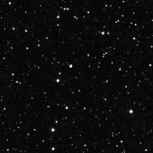

NASA Space Apps Challenge 2026 · Challenge 12: Planet X and SPHEREx
SPHEREx Agent Hunt
A crew of AI agents hunting for undiscovered moving objects in NASA’s infrared sky survey — and nothing gets called a discovery until it survives every proof check.
Abdelrahman El Sayad · solo team · New York Local Event
github.com/mrfentmen/spherex-agent-hunt · Apache 2.0
The problem
SPHEREx photographed the whole sky in 102 infrared bands. Movers hide in it.
Asteroids, comets, distant slow movers — they shift a little between visits, while stars sit still and glitches lie.
One human can’t eyeball it. The survey is patch after patch, epoch after epoch.
So the hunt is fully agentic. The human is only the last pair of eyes — and only sees a candidate after it survives every proof gate.
The system
Seven agents, one job each
Scout
Picks the sky patches, in priority order
Fetcher
Pulls SPHEREx images from IRSA (SIA v2, no login needed)
Re-runs the hunt on sabotaged data and tries to kill every candidate
Reporter
Writes the run report and any case file, with full provenance
The proof bar
Six gates. FAIL kills. UNVERIFIED stays a candidate.
1. Repeat epochs — seen in 3+ distinct epochs
2. Linear motion — one straight-line fit, small residuals, physical rate
3. Hold-out prediction — the fit must predict the next epoch’s position
4. Artifact exclusion — round, point-sized, above the SNR floor
5. Catalog cross-match — no known Gaia / WISE / MPC source there
6. Spectrum consistency — consistent flux across SPHEREx’s 102 bands
A case file — the only thing a human reviews — needs all six PASS.
Calibration — synthetic test data, labelled as such
The pipeline works. Here is the receipt.
32.33
arcsec/day — planted mover found, 4 epochs, fit rms 0.09 arcsec, hold-out prediction off by only 0.26 arcsec
6 + 2
stars killed as stationary (0.00–0.01 arcsec/day) and glitches killed on roundness — none became case files
0
case files. No discovery claimed. The mover stays a candidate until the catalog gate can pass.
21/21 unit tests pass. End-to-end calibration hunt re-run and verified Sun Nov 15.
Live data — verified Sun Nov 15
Real sky. Real hunt. Still nothing claimed.
Live inventory VERIFIED Sun Nov 15: the empty results were our own bug — a FORMAT parameter IRSA silently answers with an empty table. Found by bisection, fixed, pushed — the same query then returned real rows.
132 SPHEREx images in 15 epochs from a 0.05 deg cone (qr3; same cone on dr1: 254 images, 26 epochs). No API key, account, or login.
Real 3-frame hunt: 3 overlapping frames over 36 days, 180 numpy detections, 2 tracks linked through all 3 epochs — both killed on artifact shape. 0 case files.
Honest caveats: wide cones still hit the sandbox proxy (502); shuffled times still linked 2 tracks (NOTE); catalog cross-match stays UNVERIFIED without Gaia / WISE / MPC.
Same field center, 3 visits, 36 days apart — blink and the sky barely moves:

Every claim in a case file traces to a specific IRSA file (obs_id + access_url).
Sources & disclosure
Try it. Check it. Kill it if it’s wrong.
github.com/mrfentmen/spherex-agent-hunt
Python, stdlib plus numpy for the extractor, no other dependencies. Apache 2.0.
Data: SPHEREx via IRSA (NASA/IPAC Infrared Science Archive)
Built with AI assistance, disclosed as “Super Intelligence” per Space Apps rules